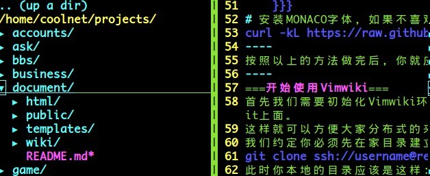

Vimwiki是基于Vim的wiki系统，可以用于个人知识系统、用于项目Wiki系统,甚至可以当作 个人blog，凡是以blog这种类型的网站或者需要知识整理的系统都可以适用.
网络上面有很多这类的东西，比如 wordpress 、 MediaWiki 、 Wikipedia 、 dokuwiki
MoinMoin 、 trac 。
还有我们自己用的个人blog等，比如新浪、网易。
也有些做的比较好的网站系统，如 为知笔记 、 有道云 、 盛大麦库 等。
更有商业产品ZimDesktop + Truecrypt + Dropbox。
这里面几乎每一个都有对应的公司，而且是大型公司在支持，所以也就有为知笔记等这类的产品
出来，也有如此之多的解决方案。
但是我们选择的方案必须满足:
所以，可以看到虽然有这么多的产品，但是却没有一个能胜任我们如此苛刻的要求的。但是Vimwiki横空出世 打破了此僵局。 Vimwiki的满足以上所有要求。可是要求也是很特殊的，就是依赖与Vim。但正是由于Vim这样一个神器级别的 编辑器使得他如此的轻巧和好使。废话不多说，他的好处是，你只需要记住几组很简单的语法，就可以完成 非常完美的文档记录功能，而且最终是以纯html输出，所以不需要任何服务组件。直接双击即可浏览。当然html 肯定是可以放在服务器上的啦。特别是页面的呈现方式也是很美的。说再多不如来试试。
既然叫Vimwiki当然就先需要安装Vim，当然这个也可以在Windows下面使用的，那就是Gvim,但是这里我就只说
Linux下面的安装与使用了.
linux一般都已经安装了vim，如果没有安装也很简单:
Ubuntu : sudo apt-get install vim vim-gtk ctags
CentOS : sudo yum install vim
你装好后Vim肯定使用不习惯，也没我这用着舒服，因为你还没配置呢？ Vim的配置其实是很复杂的，但是不用担心，直接使用我已经写好了的就可以了，如果你有些不习惯可以在此 基础之上进行修改。 配置方法:
apt-get install git
mkdir -p ~/git/myvim
cd ~/git/myvim
git clone https://github.com/batcom/vim.git .
ln -s ~/git/myvim/vimfiles ~/.vim #这里记住软链接需要写绝对路径
ln -s ~/git/myvim/.vimrc ~/.vimrc
git clone https://github.com/gmarik/vundle.git ~/.vim/bundle/vundle
curl -kL https://raw.github.com/cstrap/monaco-font/master/install-font-ubuntu.sh | bash
首先我们需要初始化Vimwiki环境，因为这个文档是公司内部的文档，所以把他放在了review.mdaxue.com上的gerrit上面。
这样就可以方便大家分布式的来完善wiki了。
我们约定你必须先在家目录建立projects目录，然后进入该目录，执行命令
git clone ssh://username@review.mdaxue.com:29418/document这样就可以把该项目pull到你本地了.
此时你本地的目录应该是这样:

== 二级标题 ==：二级标题，我一般用来标识文章标题（如果行首空一个空格则会居中，适用于所有标题标签）
=== 三级标题 ===：三级标题，我一般用来标识文章子标题
====== 六级标题 ====：六级标签，我用来标记时间（标题标签共6个，对应于等于号的个数，六级标签字体最小，一级标签字体最大，本博客首页那些粉红色标题就是用的一级标签）
[[链接地址|链接标题]]这主要用来链接本地文件，如服务器页的Nginx1.2.6的配置与安装，对应的写法为[[sytem/nginx|Nginx1.2.6的配置与安装]]
[链接地址 链接标题]：这主要用来贴链接，如我想贴个Google首页的链接可以这样写 [http://www.google.com Google]，不过这个标签我基本上没怎么用过，因为都没几个外部链接
[[转向地址|图片地址]]: 如点击图片链接到首页可以这样写[[index.html|images/pic.jpg]],这样就会显示对应的图片，而点击图片就会转到首页。如果不需要转向，直接写[[图片路径]]，如本页面介绍Vimwikipath的时候是这样写的[[{{../../../../public/images/Vimwikipath.jpg}}]],一般本系统都只需要这个写法输出本地图片。
----：四条小横线相当于< hr >标签，会出现一条本系统到处可见的横线
{{ { 程序代码或不需要编译的内容 } }}：三个大括号用来书写程序代码或其他不想被编译的内容。注意，为了防止这些演示标签生效，我加上了空格，实际使用时不要留空格
两个反斜点（这儿不便写演示代码，反斜点一般位于数字键1的左边）：相当于< code >与< /code >标签，显示效果就是本页随处可见的绿色荧光字
*:无序列表，本页的每条前面的小原点。
#:有序列表，本系统中前面带数字的列表。以上两个可以无限嵌套使用.
{{ {class="brush :bash" } }}:三个大括号加个class代表使用SyntaxHighlighter来显示代码。:bash代表shell语法高亮,:php，:Java类似.
到此你应该就可以使用Vimwiki了，如果还有问题可以随时提问，QQ:1516070515
{kind=link}